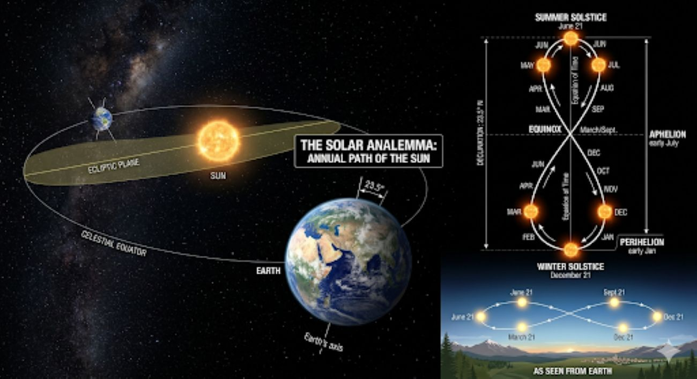

There is a rhythm to the year that most of us feel without ever quite being able to name it. It lives in the way the light shifts through the windows, the way shadows stretch or shrink across the floor, the way a certain morning glow in spring can feel like something you have felt before. That feeling is real — and behind it is a dependable astronomical rhythm: the changing position of the sun in our sky as Earth moves through its orbit.
Long before clocks and calendars became part of ordinary life, people learned to watch those changes. NASA notes that early farming societies depended on recognizing recurring patterns in the sky so they could anticipate the seasons, and that monuments such as Stonehenge were built in relation to the sun's changing position. The solstices mark the two annual extremes of the sun's apparent north-and-south movement in the sky. The equinoxes mark the moments when the sun crosses the plane of Earth's equator. Together, they give the year a remarkably steady astronomical framework.
We can still see traces of that attention written into ancient landscapes. At Stonehenge, the great sarsen stones placed at the center of the monument around 2500 B.C. were carefully arranged in relation to the sun. English Heritage describes a solstice axis running through the monument: around midsummer, the sun rises near the Heel Stone, while around midwinter the setting sun aligns with the monument's great trilithon. Whatever the full meaning of Stonehenge may have been, its architecture makes the changing extremes of the solar year difficult to ignore.
At Newgrange in Ireland, the relationship is even more intimate. The passage and chamber face southeast toward the rising winter-solstice sun. For several days around December 21, sunlight can enter through a small opening above the entrance, known as the roof box, and travel into the chamber. Heritage Ireland notes that the illumination can last up to about 17 minutes, depending on weather conditions. It is easy to understand why a brief event like that — light arriving in a place that is otherwise dark — would have carried meaning for the people who built and used the monument.
These places remind us that the seasons were never merely names on a calendar. The position of the sun changed what people could see, when they had daylight to work, and how the year announced itself. The astronomical vocabulary came later; the watching came first.
And then there is the analemma — one of those quiet pieces of astronomy that becomes strangely beautiful once you know what you are looking at. Imagine standing in the same place and marking the position of the sun at exactly the same clock time every day for a year. Layer those positions together and, rather than making a straight line, the sun traces a lopsided figure eight.
The shape comes from two things working together: Earth's axial tilt and the fact that Earth's orbit around the sun is not a perfect circle. Because of those motions, the sun does not return to precisely the same place in the sky at the same clock time each day. Over a year, those small differences accumulate into the familiar loop.
For an observer in the Northern Hemisphere, the sun appears near the upper part of the analemma around the June solstice and near the lower part around the December solstice. The equinoxes sit around the middle of the figure, rather than at its crossover point. That distinction matters: the figure eight is a record of the sun's apparent position at one chosen clock time, while an equinox is an astronomical event defined by the sun crossing Earth's equatorial plane.
You do not need to photograph the sky every day to notice what the analemma represents. Look instead at the room. In winter, the lower arc of the sun's path allows sunlight to reach farther into a south-facing room, drawing long bands of light across floors and furniture. In summer, the sun climbs higher and the same windows can receive a shorter, brighter patch of direct sunlight. The house becomes a kind of seasonal instrument, quietly recording the changing angle of the sky.
The equinoxes offer another useful marker. Around the March and September equinoxes, the sun crosses Earth's equatorial plane, and the seasonal direction of its apparent path changes. In the Northern Hemisphere, March begins the astronomical spring and September begins astronomical autumn; south of the equator, the seasonal names reverse. Day and night are close to equal around an equinox, although they are not perfectly equal at every latitude because of the sun's size and atmospheric refraction.
That is perhaps the part I like most about all of this: the sun does not need us to keep the schedule. We notice it. We name it. We build calendars and monuments around it. We move furniture when the afternoon light changes, open the curtains earlier in summer, linger over a winter window, and recognize a familiar quality of light without necessarily knowing why it feels familiar.
The seasons will continue their slow turn. The light will climb, peak, soften, and return. The geometry overhead is more precise than our metaphors, but the feeling it gives us is wonderfully human: that the year is not simply passing us by. It is moving in a pattern — one we can see on a floor, in a garden, through a window, or in the brief beam of sunlight that reaches an ancient chamber at midwinter.
The sun keeps its rhythm. We are simply learning to notice it.